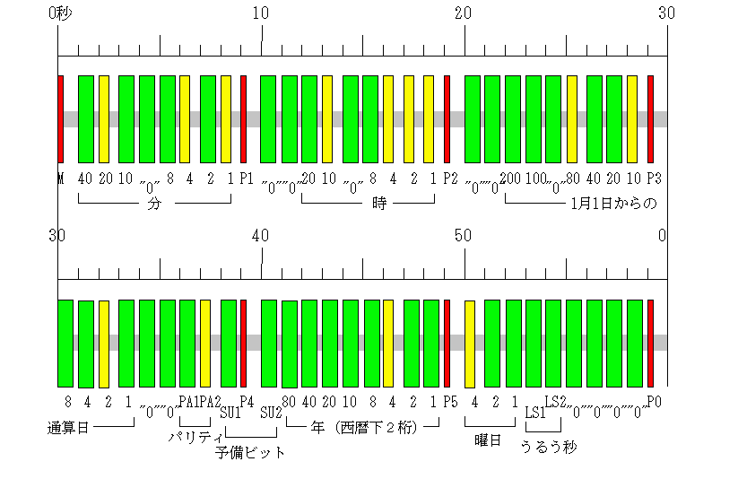
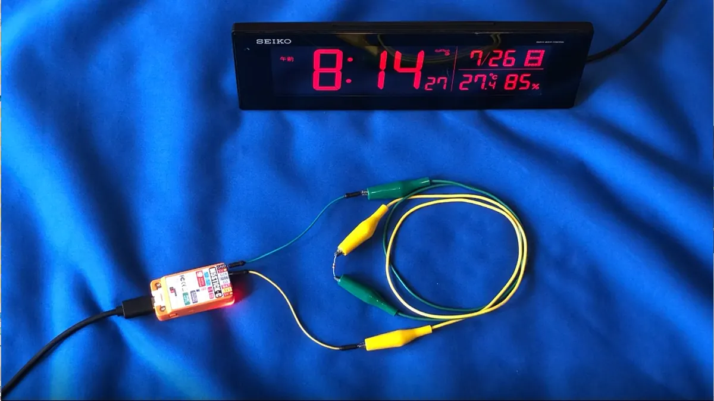
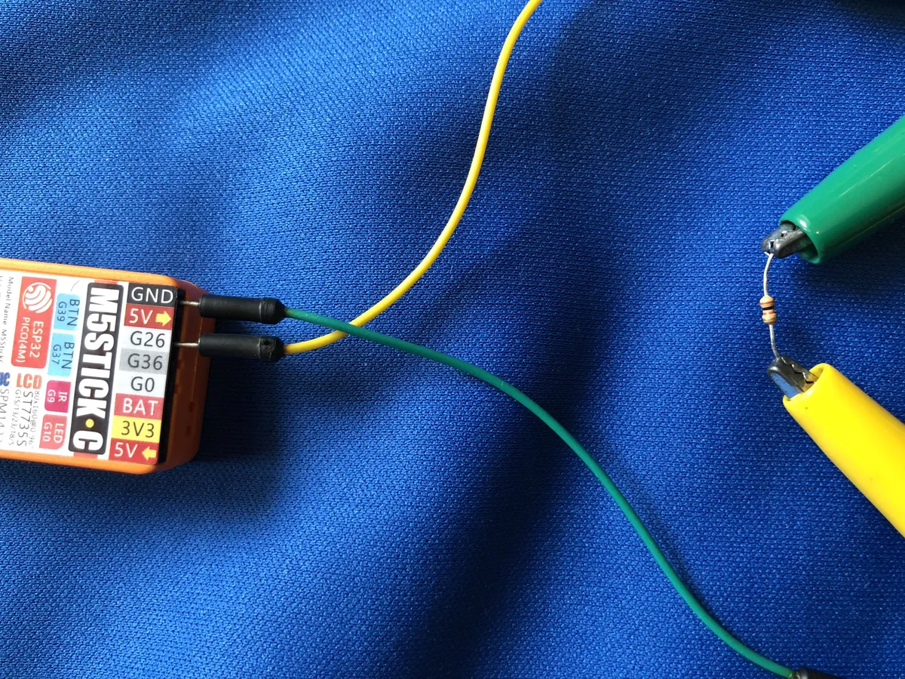
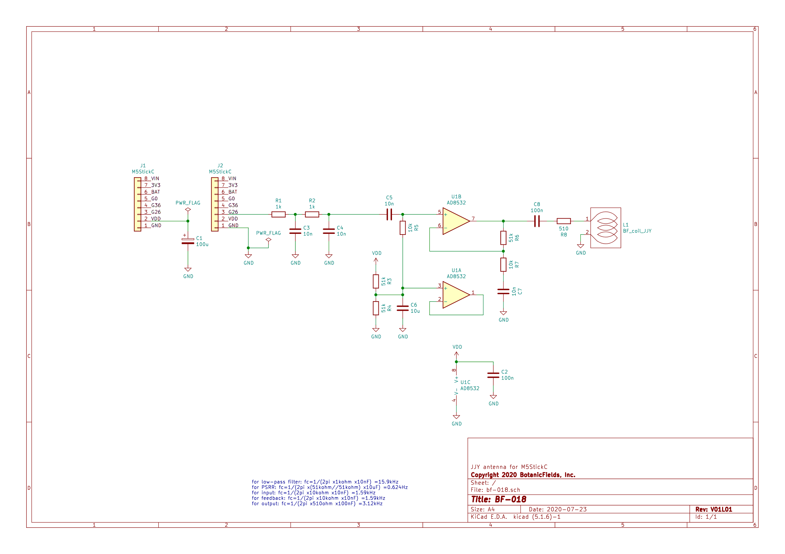
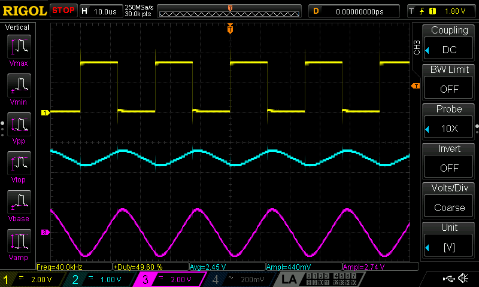
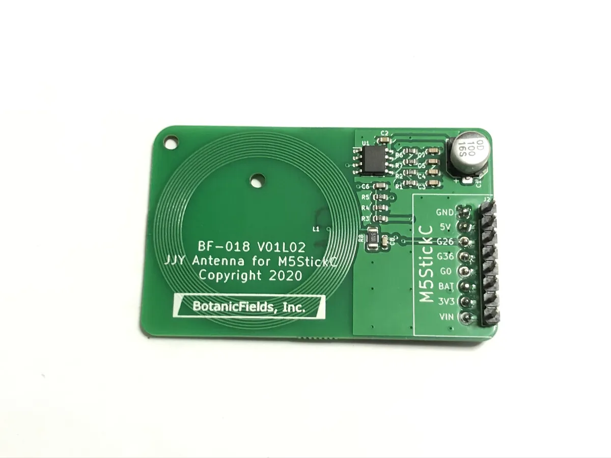
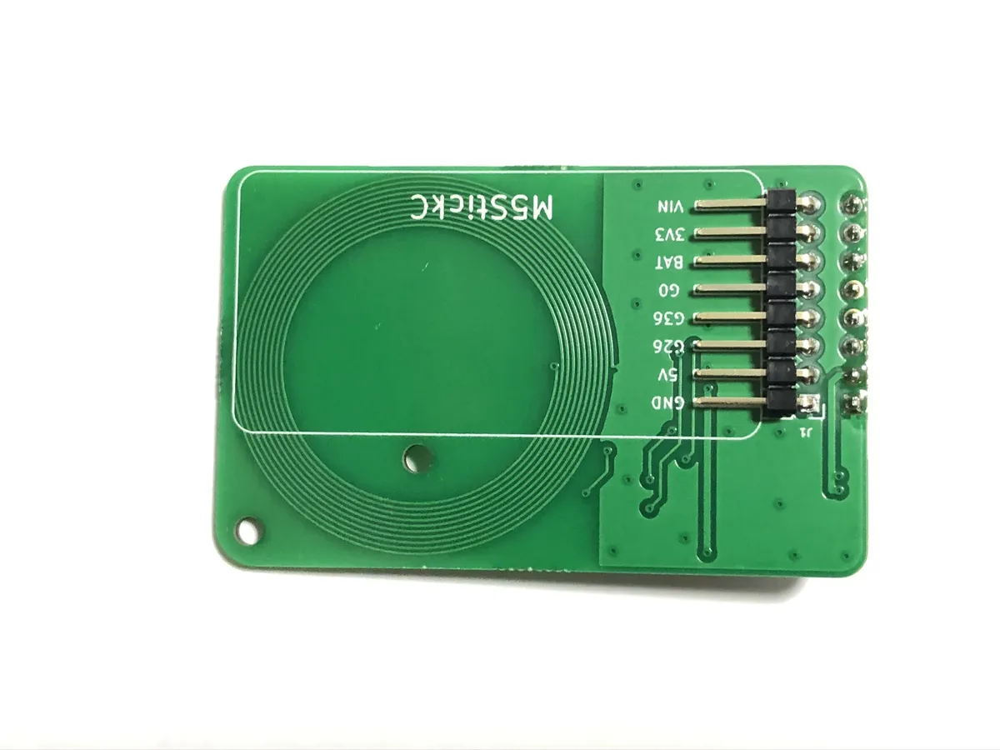
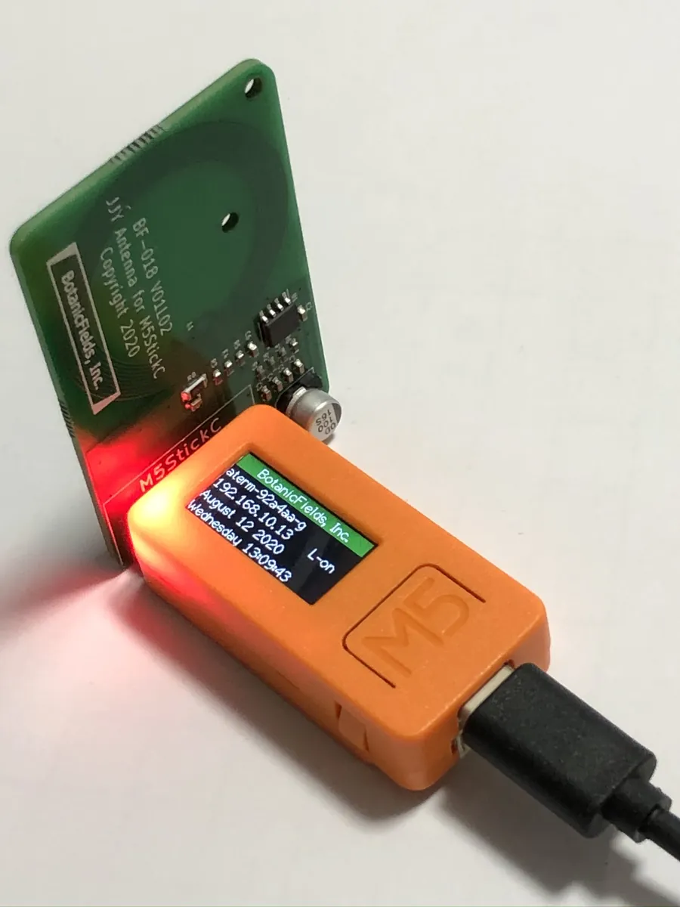
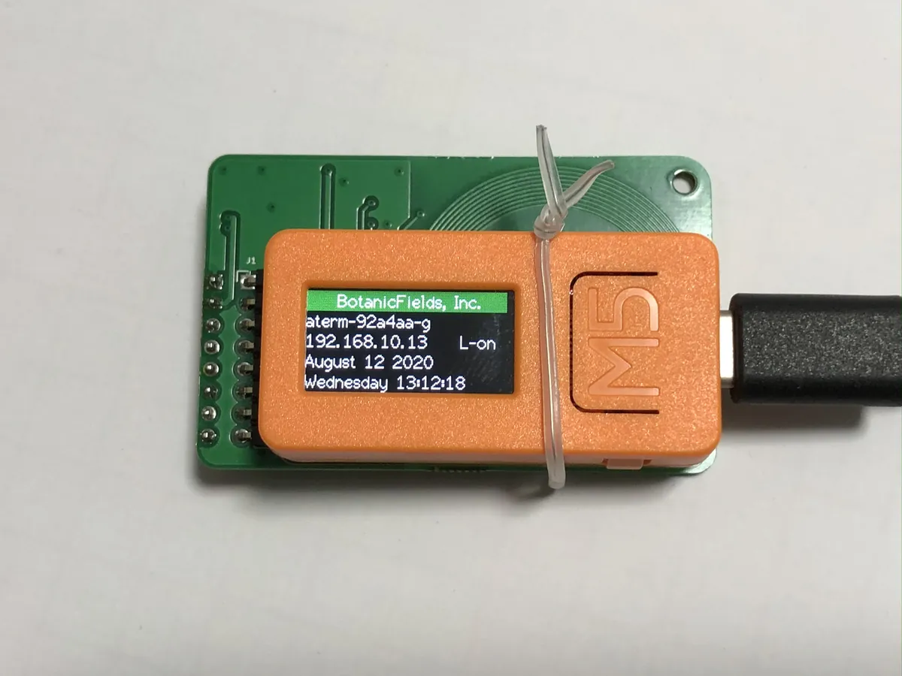

Generating a Simulated JJY Time Signal with Ticker on the M5StickC / M5Atom
標準電波 JJY もどきを M5StickC / M5Atom の Ticker で生成する
1. Introduction
Repeaters are sold to rescue radio-controlled clocks that sit where the radio signal can't reach them12, and electronics kits are on sale too3. Besides the approach of receiving the standard time signal and passing it straight on, it is also common to generate a simulated standard time signal from a different source, such as NTP or GPS. As long as it stays within the bounds of transmitting a very weak radio signal based on time obtained over NTP, this can be done compactly and cheaply with a Wi-Fi IoT device such as the M5StickC4. Drawing on earlier examples56, I'm going to enjoy learning about programming and printed circuit boards along the way.
“Very weak radio signal” translates 微弱電波 (bijaku denpa): in Japan, emissions weak enough to fall under this category of the Radio Act can be transmitted without a licence.
2. Approach
The specification of the standard time signal is published by NICT7. I'll generate a simulation of the normal time code it describes.

The labels in this NICT diagram are in Japanese. Red pulses are markers (M, P0 to P5), yellow pulses are binary 1 and green pulses are binary 0; the numbers under the pulses are the weights of the bits. The Japanese labels mean:
- 秒
- seconds
- 分
- minute
- 時
- hour
- 1月1日からの通算日
- day of the year, counted from 1 January
- パリティ
- parity (PA1: hour, PA2: minute)
- 予備ビット
- spare bits (SU1, SU2)
- 年（西暦下２桁）
- year (last two digits of the Gregorian year)
- 曜日
- day of the week
- うるう秒
- leap second (LS1, LS2)
In the time code, one of the following pulse widths is transmitted every second:
- 0.2 s ±5 ms: marker (M), position markers (P0 to P5)
- 0.5 s ±5 ms: binary 1
- 0.8 s ±5 ms: binary 0
At each 0.1-second tick, what to do with the JJY signal (turn it on, turn it off, or do nothing) is uniquely determined by the date at that moment (year, month, day, day of the week) and the time (hour, minute, second). A timer interrupt can be used to get the 0.1-second timing. Implemented on this principle, all the processing can be completed within the interrupt alone, which also makes it possible to run in the background. Pulses can also be output starting partway through a time code, which makes it easy to check that it has started working.
3. Timer interrupts
I chose the M5StickC / M5Atom as the device and use the Arduino IDE9 as the development environment. For the timer interrupt I use Ticker10. A hardware timer interrupt11 could probably be used as well, but it is overkill for this purpose.
Ticker
Ticker, provided as a library for the Arduino IDE, can't be expected to match the accuracy of a hardware timer interrupt, but it is easy to use by following the sample programs. Here the processing runs on a 100 ms cycle, and the accuracy required by NICT's specification is ±5 ms, so Ticker can be said to be just right for the job12.
Hardware timer interrupts
The real-world performance of hardware timer interrupts on the ESP32 is covered in detail in explanatory articles1314. They can handle periods shorter than a millisecond with little latency. As an application example, there is a case where the dynamic drive of a 16-segment LED display was handled by a hardware interrupt with a 2 ms period15. Using them sets a higher bar, though: among other things, you also need some knowledge of FreeRTOS1617.
4. Coding
4.1 Defining the Ticker
Using the Ticker class, the processing that calls the function TcoGen(), which generates the JJY signal (TCO: Time Code Output),
every 100 ms can be coded as follows.
#include <Ticker.h>
// Ticker for TCO(Time Code Output) generation
const int ticker_period = 100; // 100ms
Ticker tk;
void setup() {
M5.begin();
// start Ticker for TCO
tk.attach_ms(ticker_period, TcoGen);
} 4.2 Generating the JJY signal
TcoGen(), which is called every 100 ms, checks the current time (to 0.1 seconds) and, when it is at 0.0, 0.2, 0.5 or 0.8 seconds,
calls the JJY signal handling. The current time to 0.1 seconds is obtained in microseconds from the tv_usec member of the
timeval structure. At the same time, the date and time information is also fetched with getlocaltime().
struct tm td; // time of day .. year, month, day, hour, minute, second
struct timeval tv; // time value .. milli-second. micro-second
// main task of TCO
void TcoGen()
{
if (!getLocalTime(&td)) {
Serial.println("[TCO]Failed to obtain time");
return;
}
gettimeofday(&tv, NULL);
int tv_100ms = tv.tv_usec / 100000;
switch (tv_100ms) {
case 0: Tco000ms(); break;
case 2: Tco200ms(); break;
case 5: Tco500ms(); break;
case 8: Tco800ms(); break;
default: break;
}
}Below is the handling for each of 0.0, 0.2, 0.5 and 0.8 seconds of the current time (to 0.1 seconds):
- At 0.0 s, turn the JJY signal on, whatever the second.
- At 0.2 s, if the current second is one in which a marker is sent, turn the JJY signal off.
- At 0.5 s, if, according to the current date and time, the current second is one in which a 1 is sent, turn the JJY signal off.
- At 0.8 s, turn the JJY signal off, whatever the second.
const int marker = 0xff; // marker code which TcoValue() returns
// TCO task at every 0ms
void Tco000ms()
{
TcOn();
}
// TCO task at every 200ms
void Tco200ms()
{
if (TcoValue() == marker)
TcOff();
}
// TCO task at every 500ms
void Tco500ms()
{
if (TcoValue() != 0)
TcOff();
}
// TCO task at every 800ms
void Tco800ms()
{
TcOff();
}Here is the body of the function TcoValue(), which, from the date and time, returns the signal (marker, 1 or 0) to send in the
current second. It is a simple construction: just 60 case statements in a row.
const int marker = 0xff; // marker code which TcoValue() returns
// TCO value
// marker, 1:not zero, 0:zero
int TcoValue()
{
int bcd_hour = Int3bcd(td.tm_hour);
int parity_bcd_hour = Parity8(bcd_hour);
int bcd_minute = Int3bcd(td.tm_min);
int parity_bcd_minute = Parity8(bcd_minute);
int year = td.tm_year + 1900;
int bcd_year = Int3bcd(year);
static const int days_of_month[12] = { 31, 28, 31, 30, 31, 30, 31, 31, 30, 31, 30, 31 };
int days = td.tm_mday;
for (int i = 0; i < td.tm_mon; ++i) // td.tm_mon starts from 0
days += days_of_month[i];
if ((td.tm_mon >= 2) && (((year % 4 == 0) && (year % 100 != 0)) || (year % 400 == 0)))
++days;
int bcd_days = Int3bcd(days);
int day_of_week = td.tm_wday;
int tco;
switch (td.tm_sec) {
case 0: tco = marker; break;
case 1: tco = bcd_minute & 0x40; break;
case 2: tco = bcd_minute & 0x20; break;
case 3: tco = bcd_minute & 0x10; break;
case 4: tco = 0; break;
case 5: tco = bcd_minute & 0x08; break;
case 6: tco = bcd_minute & 0x04; break;
case 7: tco = bcd_minute & 0x02; break;
case 8: tco = bcd_minute & 0x01; break;
case 9: tco = marker; break;
case 10: tco = 0; break;
case 11: tco = 0; break;
case 12: tco = bcd_hour & 0x20; break;
case 13: tco = bcd_hour & 0x10; break;
case 14: tco = 0; break;
case 15: tco = bcd_hour & 0x08; break;
case 16: tco = bcd_hour & 0x04; break;
case 17: tco = bcd_hour & 0x02; break;
case 18: tco = bcd_hour & 0x01; break;
case 19: tco = marker; break;
case 20: tco = 0; break;
case 21: tco = 0; break;
case 22: tco = bcd_days & 0x200; break;
case 23: tco = bcd_days & 0x100; break;
case 24: tco = 0; break;
case 25: tco = bcd_days & 0x080; break;
case 26: tco = bcd_days & 0x040; break;
case 27: tco = bcd_days & 0x020; break;
case 28: tco = bcd_days & 0x010; break;
case 29: tco = marker; break;
case 30: tco = bcd_days & 0x008; break;
case 31: tco = bcd_days & 0x004; break;
case 32: tco = bcd_days & 0x002; break;
case 33: tco = bcd_days & 0x001; break;
case 34: tco = 0; break;
case 35: tco = 0; break;
case 36: tco = parity_bcd_hour; break;
case 37: tco = parity_bcd_minute; break;
case 38: tco = 0; break;
case 39: tco = marker; break;
case 40: tco = 0; break;
case 41: tco = bcd_year & 0x80; break;
case 42: tco = bcd_year & 0x40; break;
case 43: tco = bcd_year & 0x20; break;
case 44: tco = bcd_year & 0x10; break;
case 45: tco = bcd_year & 0x08; break;
case 46: tco = bcd_year & 0x04; break;
case 47: tco = bcd_year & 0x02; break;
case 48: tco = bcd_year & 0x01; break;
case 49: tco = marker; break;
case 50: tco = day_of_week & 0x04; break;
case 51: tco = day_of_week & 0x02; break;
case 52: tco = day_of_week & 0x01; break;
case 53: tco = 0; break;
case 54: tco = 0; break;
case 55: tco = 0; break;
case 56: tco = 0; break;
case 57: tco = 0; break;
case 58: tco = 0; break;
case 59: tco = marker; break;
default: tco = 0; break;
}
return tco;
}
int Int3bcd(int a)
{
return (a % 10) + (a / 10 % 10 * 16) + (a / 100 % 10 * 256);
}
int Parity8(int a)
{
int pa = a;
for (int i = 1; i < 8; ++i) {
pa += a >> i;
}
return pa % 2;
}4.3 Generating the 40 kHz signal
I use the LEDC library provided with the Arduino IDE for the ESP32. There is a reference article on the LEDC parameters18.
The LEDC signal is turned on and off by changing the duty setting. In PWM, frequent duty changes are well within what it is designed for.
Signal off is 0% duty. For monitoring, the M5StickC's built-in LED is switched on and off at the same time: LOW is on,
HIGH is off.
// PWM for TCO signal
const uint8_t ledc_pin = 26;
const uint8_t ledc_channel = 0;
const double ledc_frequency = 40000; // 40kHz
const uint8_t ledc_resolution = 8; // 2^8 = 256
const uint32_t ledc_duty_on = 128; // 50%
const uint32_t ledc_duty_off = 0; // 0
// for monitoring
const int led_pin = 10; // led_pin to monitor
bool led_enable = true; //
void setup()
{
M5.begin();
// start TCO signal source(40kHz)
ledcSetup(ledc_channel, ledc_frequency, ledc_resolution);
ledcAttachPin(ledc_pin, ledc_channel);
// for monitoring
pinMode(led_pin, OUTPUT);
}
void TcOn()
{
ledcWrite(ledc_channel, ledc_duty_on);
if (led_enable)
digitalWrite(led_pin, LOW);
}
void TcOff()
{
ledcWrite(ledc_channel, ledc_duty_off);
digitalWrite(led_pin, HIGH);
}4.4 Other
Wi-Fi settings
I use WiFiManager19. You need to install the following library with the Library Manager:
- WiFiManager by tzapu, tablatronix
There are many similar libraries, but this one has by far the most stars on GitHub. I'm using “Release v2.0.3-alpha Development”. The fact that it is an alpha version does bother me a little. For how to connect to Wi-Fi, please see WiFiManager's documentation on GitHub.
#include <WiFi.h>
#include <WiFiManager.h> // https://github.com/tzapu/WiFiManager
// initialize Wifimanager
WiFiManager wm;
void setup()
{
M5.begin();
// connect Wifi
// wm.resetSettings(); // for testing
if (!wm.autoConnect())
Serial.println("Failed to connect");
else
Serial.println("connected...yeey :)");
}NTP settings
These are the usual NTP settings. With these settings, time synchronisation over NTP apparently runs once an hour20.
// for NTP
const int gmt_offset = 3600 * 9; // JST-9
const int daylight = 3600 * 0; // No daylight time
const char* ntp_server = "pool.ntp.org";
struct tm td; // time of day .. year, month, day, hour, minute, second
void setup()
{
M5.begin();
// start NTP
configTime(gmt_offset, daylight, ntp_server);
while (!getLocalTime(&td)) {
Serial.println("Waiting to obtain time");
delay(100);
}
Serial.println(&td, "%A %B %d %Y %H:%M:%S");
}5. Variation in the Ticker period
At every Ticker interrupt, I tallied the variation in the time elapsed since the previous interrupt. An elapsed time of 100 ms is taken as the centre value, 0. (Measured over about 62 hours.)
| Range | Count |
|---|---|
| up to −50 ms | 17 |
| −50 ms to −5 ms | 11 |
| −5 ms to −0.5 ms | 19,337 |
| −0.5 ms to −0.05 ms | 21,813 |
| −0.05 ms to 0.05 ms | 2,159,817 |
| 0.05 ms to 0.5 ms | 22,338 |
| 0.5 ms to 5 ms | 18,773 |
| 5 ms to 50 ms | 11 |
| 50 ms and over | 19 |
- Mean: −0.0000853 ms
- Standard deviation: 1.1360784 ms
- Minimum: −902.830 ms
- Maximum: 929.487 ms
Cases where the Ticker period was off by more than ±5 ms occurred 58 times in 62 hours. Values beyond ±900 ms were also recorded for the maximum and minimum. My guess is that the Ticker period is disturbed because it competes with system processing, including NTP and Wi-Fi, and that system processing is delayed depending on network conditions. Even so, 99.997% of periods are within the specified range (±5 ms), and the radio-controlled clock retries on its side as well, so in practice it doesn't seem to be a problem. From the standard deviation, ±6σ = ±6.83 ms, which does not fit within ±5 ms. It can't be called industry-leading quality.
6. Hardware
The 40 kHz simulated JJY signal is output from GPIO26 of the M5StickC. Connect GPIO26 to GND with a wire, with a resistor of about 1 kΩ inserted partway along it. A simulated JJY signal current of about 3 mA flows. If you run the wire very close to the radio-controlled clock, the clock picks up the magnetic field produced around the wire. I've uploaded a video of the clock being set21.


6.1 Improving the waveform
The 40 kHz signal output by the GPIO is a square wave and contains a large amount of unwanted frequency content. For continuous use, I'd like to reduce the noise as far as possible and get closer to a sine wave, so a low-pass filter removes the high-frequency components. I chose the resistor and capacitor values of the low-pass filter while watching the waveform on an oscilloscope. Even with the cutoff frequency set around 40 kHz, the waveform didn't become rounded enough. On the assumption that the signal is amplified afterwards, I used two stages with a cutoff frequency of about 16 kHz.

The observed waveforms:

- CH1 (yellow): GPIO26 – 40 kHz square wave
- CH2 (light blue): input of the amplifier after the two low-pass filter stages – 440 mV amplitude, centred on 2.45 V
- CH3 (purple): voltage across the resistor just before the loop antenna – 2.74 V amplitude, centred on ground
CH2's 0 V position is at the same height as CH3's, so they overlap.
An alternative hardware configuration
Instead of outputting the JJY signal directly from the GPIO, another possible configuration is to have the GPIO output the same level signal as the monitor LED and use it to control an external analog switch that turns a 40 kHz signal on and off. The 40 kHz source could be output continuously from another GPIO and wave-shaped, or a good-quality external oscillator could be used. The analog switch could either switch the 40 kHz signal on and off directly or control the gain of an amplifier.
6.2 Printed circuit board
I made a printed circuit board that holds the circuit above, with the antenna's loop pattern built into the board itself. I designed it in KiCad22, and for the loop pattern I used a publicly available Python tool2324.
I've put videos of setting the time with the board on YouTube252627. The best placement seems to be on the line extending lengthwise from the radio-controlled clock (or rather, from the ferrite-bar antenna inside it), with the loop pattern at right angles to that line. The loop pattern and the winding of the ferrite-bar antenna are then parallel, and the magnetic coupling is at its maximum. I was able to set the clock from a distance of 70 cm; at 90 cm it appears to be difficult. Facing the front of the clock, it could set the time at a distance of 30 cm, but at 50 cm it became difficult.




7. Conclusion
I've put the code on GitHub28. The printed circuit board is sold on consignment29. This turned out to be a pretty practical build. My thanks to everyone whose work I drew on.
8. Postscript
I've also made code and a printed circuit board for the M5Atom303132. This board is also sold on consignment33.
Footnotes
- Kyoritsu Eleshop – Special feature: repeater (time-setting) series for radio-controlled clocks (in Japanese) ↩
- Mizuho Communications Laboratory – JJY repeater for radio-controlled clocks (in Japanese) ↩
- YS Electronics Lab – JJY Japan Standard Time simulator kit (in Japanese) ↩
- M5Stack Docs – M5StickC ↩
- Qiita @fumi38g – JJY simulator (in Japanese) ↩
- mgo-tec Electronics – Adding a JJY radio-clock transmitter module to an M5Stack Yahoo News / weather forecast / clock and running it with multitasking (in Japanese) ↩
- NICT – Operating status of the standard time signal (radio clocks) – How the standard time signal is transmitted (in Japanese) ↩
- NICT – Time code during normal operation (other than at 15 and 45 minutes past each hour), example (in Japanese) ↩
- M5Stack Docs – Arduino IDE ↩
- GitHub espressif – Ticker ↩
- GitHub espressif – esp32-hal-timer.h, esp32-hal-timer.c ↩
- Lang-Ship – Looking into Ticker, the ESP32 timer class (in Japanese) ↩
- CQ Publishing – Interface, January 2020 issue, special feature, chapter 4: A study of real-time processing on the ESP32 (in Japanese) ↩
- Kenta IDA – An introduction to the ESP32 special feature (in Japanese) ↩
- Yoshiyuki Uehara – How to make GPIO Signals to Control Hardware ↩
- Amazon – FreeRTOS (in Japanese) ↩
- Lang-Ship – Looking into high-precision timer interrupts on the ESP32 (in Japanese) ↩
- Qiita: Using an Excel sheet to work out the resolution setting for LEDC (LED PWM Controller) on the ESP32 (in Japanese) ↩
- GitHub – tzapu/WiFiManager ↩
- Qiita @h_nari – NTP setup on the ESP8266 takes one line (in Japanese) ↩
- YouTube – JJY Simulator by M5StickC for a radio controlled clock ↩
- KiCad ↩
- GitHub – jedrzejboczar/kicad-coil-generator ↩
- Qiita @BotanicFields – Creating a loop antenna pattern in KiCad with Python (in Japanese) ↩
- YouTube – BF-018: JJY Antenna for M5StickC: longitudinal direction ↩
- YouTube – BF-018: JJY Antenna for M5StickC - with straight connecter ↩
- YouTube – BF-018: JJY Antenna for M5StickC - with right-angle connecter ↩
- GitHub – botanicfields/BF-018 ↩
- Switch Science – JJY antenna board for M5StickC (in Japanese) ↩
- M5Atom Lite ↩
- M5Atom Matrix ↩
- GitHub – botanicfields/BF-018A ↩
- Switch Science – JJY antenna board for M5Atom Lite/Matrix (in Japanese) ↩